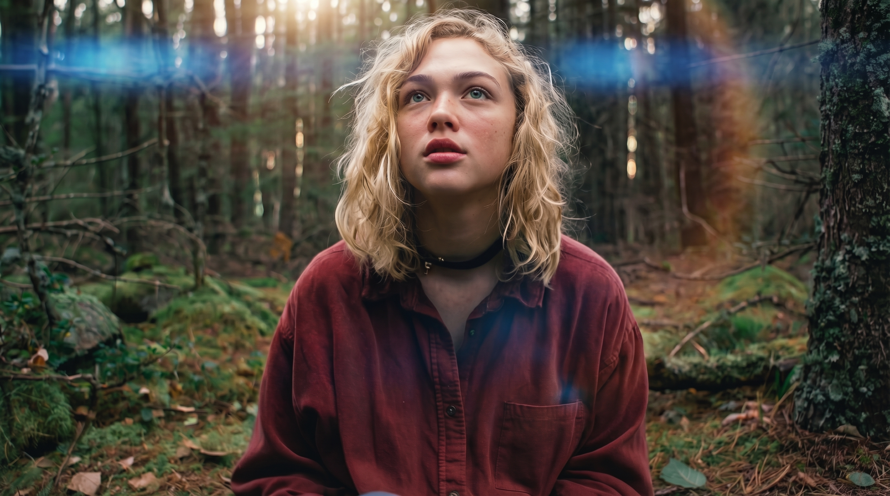
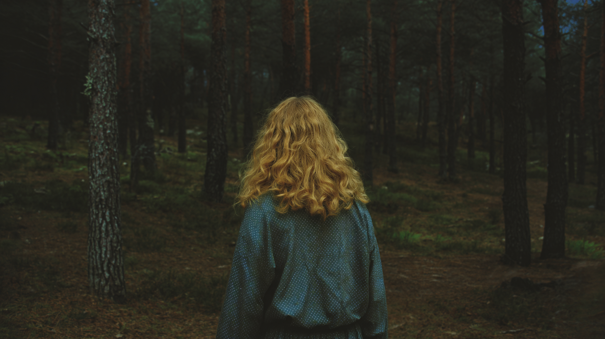
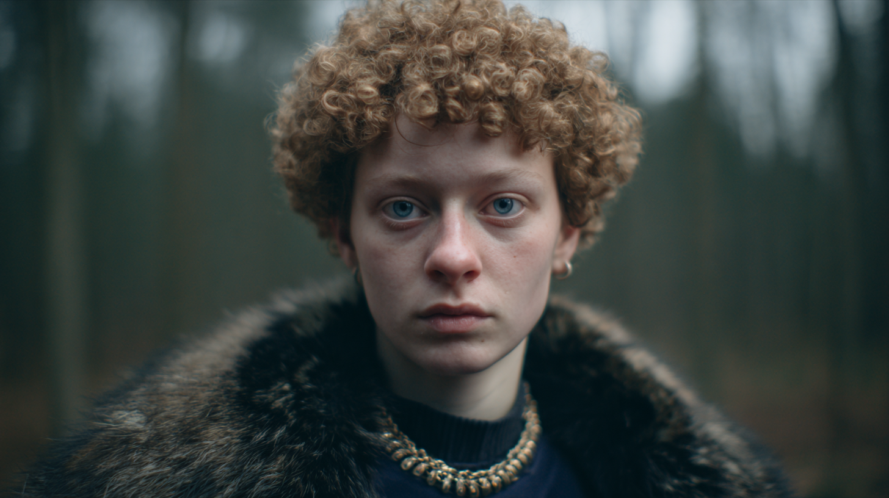
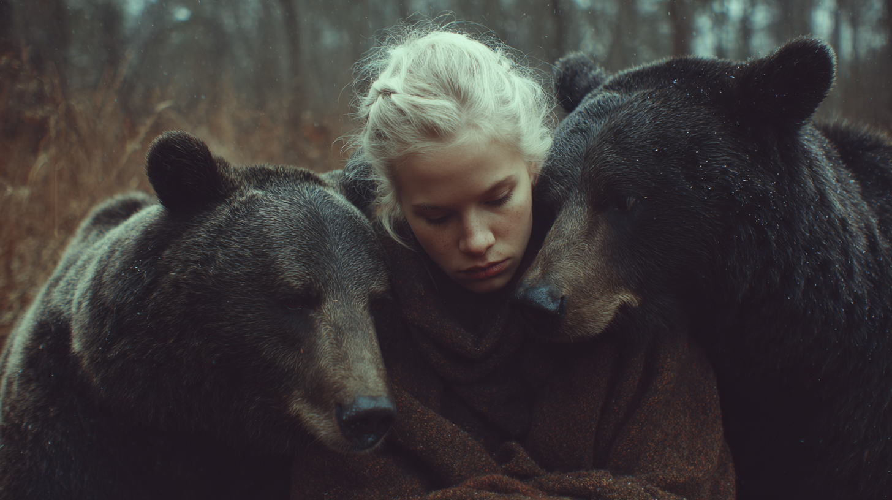
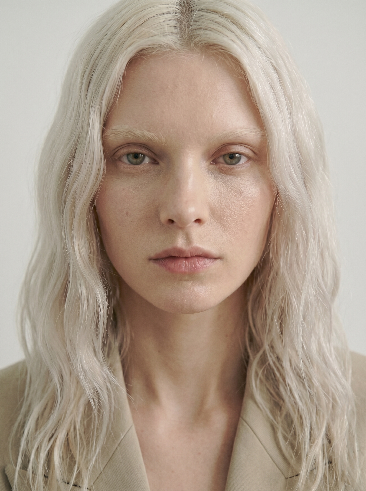
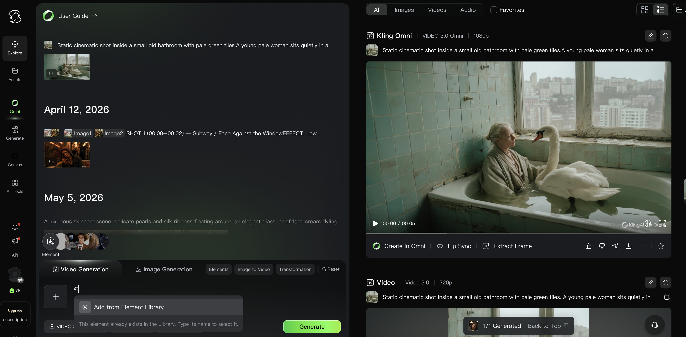
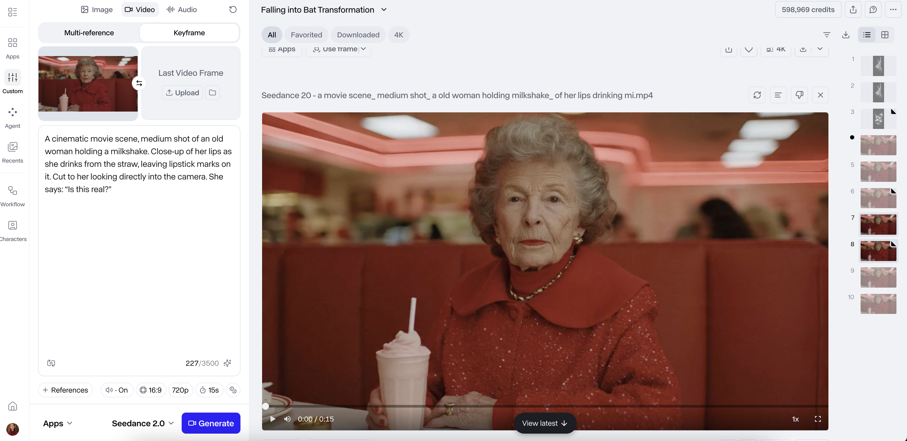
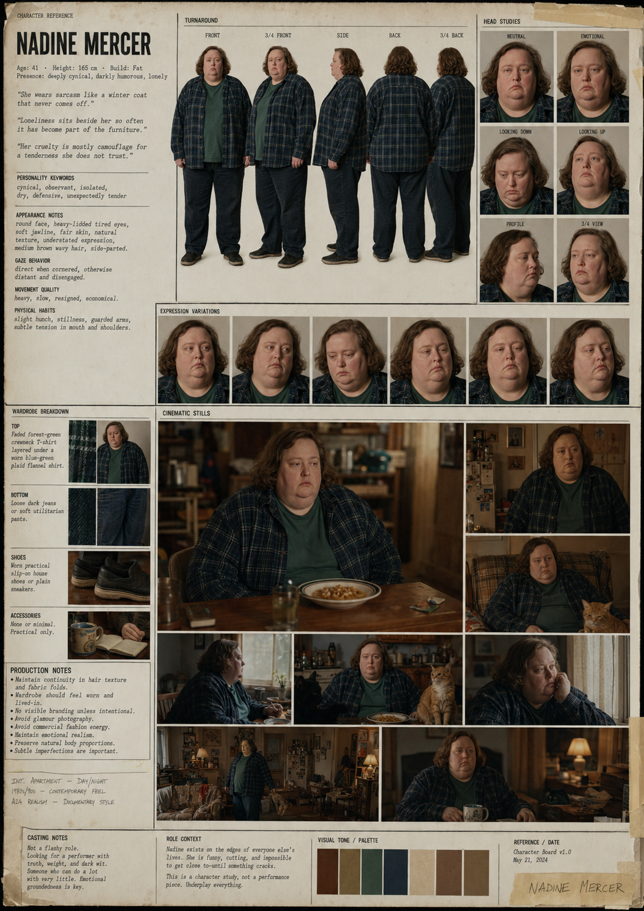

(כן, גם עכשיו. דווקא עכשיו. עם תה ביד ועין חצי פתוחה)
01 — 16
לפני שמתחילים — טריק קטן
דרך פשוטה לפתח רעיון לטריילר
לפעמים במקום לשבת ולחכות להשראה —
אפשר פשוט לתת לצ'אט משימה חכמה.
לחבר בין סגנון של במאי לבין עולם מעניין
ולבקש ממנו להציע כיוונים.
02 — 16
הפרומפט
What are some fun mashup ideas for a trailer
that blends a cool director style
with an interesting world?
זה פרומפט מעולה להתחלה —
כי הוא לא מייצר ישר תוצאה סופית.
הוא קודם כל פותח כיוונים.
03 — 16
מה הוא נותן לנו בעצם?
במקום דף ריק
✦
שילובים מפתיעים
✦
כיוונים ויזואליים
✦
טון ואווירה
✦
השראה לעולמות
✦
התחלה של רעיון שאפשר לפתח הלאה
לא טריילר עדיין — אלא גרעין טוב לטריילר.
04 — 16
דוגמאות לתשובות שהוא יכול לתת
במאי + עולם
Wes Anderson
+ תחנת חלל עתידנית
Tim Burton
+ קניון אמריקאי משנות ה־90
David Lynch
+ תחרות יופי
Tarantino
+ קרקס נודד
Sofia Coppola
+ ארמון של נסיכות דיגיטליות
מכאן בוחרים רעיון אחד
וממשיכים לפתח — שוטים, דמויות, שפה.
05 — 16
תרגיל — 10 דקות
עכשיו אתם
פשוט תכניסו את הפרומפט הזה לצ'אט.
אפשר לשלב בפנים את הרעיון שלכם.
What are some fun mashup ideas for a trailer
that blends a cool director style
with an interesting world?
אין תשובה לא נכונה. יש רק רעיון שעוד לא קיים.
06 — 16
השבט — וידאו AI · שיעור 02
תמונה יפה זה לא מספיק.
יש תמונות שנראות טוב.
ויש תמונות שאי אפשר להפסיק להסתכל עליהן.
ההבדל לא נמצא בכלי. הוא נמצא בשפה.
07 — 16
הבעיה
AI היום יכול ליצור תמונות מושלמות מדי.
עור חלק מדי. שיער מסורק מדי. אור אחיד מדי.
ולכן זה נראה מזויף.
הפלסטיק מגיע מדיוק יתר.
מחוסר פגמים.
ואת הפגמים — צריך לבקש בעצמכם.
08 — 16
מושלם מדי
קולנועי
הנוסחה
ככה בונים פרומפט קולנועי
מדיום
+
נושא
+
פעולה
+
סביבה
+
תאורה
+
רגש
+
סגנון
■ מדיום■ נושא■ פעולה■ סביבה■ תאורה■ רגש — אנרגיה, מצב רגשי■ סגנון — מצלמה, עדשה, grain, גריידינג
still from a movie,
medium shot,
a young womaneating ice cream,
American diner, red vinyl booths, rain on the window,
warm neon light, practical lighting,
pensive expression,
shot on ARRI Alexa, 35mm lens, film grain, muted warm color grade
09 — 16
דוגמאות — במאי × עולם
איך זה נראה בפועל
Wes Anderson
Tim Burton
David Fincher
Sofia Coppola
Quentin Tarantino
Wong Kar-wai
Pedro Almodóvar
Gaspar Noé
10 — 16
ARRI Alexa
הוליווד — כמעט כל סרט
24mm
מרחב, נוף — כמו שאתן שם
35mm
טבעי, אינטימי — כמו העין
50mm
נייטרלי — בלי דרמה
85mm
פורטרט — הדמות היא הכל

anamorphic
קולנוע קלאסי + lens flares
מצלמה ועדשה
כשאתן כותבות shot on ARRI Alexa —
המודל לא רק משנה טקסטורה.
הוא עובר לאוסף ההפניות שלו מסרטים.
הוא ראה 10,000 שעות ממנה.
הוא יודע מה היא מרגישה.
shot on ARRI Alexa
shot on Canon 5D
shot on iPhone
super 8mm film
24mm lens
מרחב, נוף, גדולה לנופים וקבוצות — כמו שאתן ממש שם.
35mm lens
טבעי, אינטימי הכי קרוב לעין. לסצנות יומיומיות.
50mm lens
נייטרלי, נקי הדמות כמו שהיא — בלי דרמה.
85mm lens
פורטרט, רקע מטושטש מבודד פנים, מטשטש הכל מאחור.
anamorphic
קולנוע קלאסי + lens flares לוק הוליווד — הגוף מכיר מהקולנוע.
f/1.8 · f/2.8
bokeh עמוק רקע נמחק לגמרי, דמות בולטת.
11 — 16
golden hour
ערב שעומד להיגמר
volumetric light
עשן, עומק, מסתורי
rim lighting
קשה, דרמטי, גיבורה
soft diffused light
עדין, חלומי, רך
practical lighting
ריאלי, מהחדר עצמו
תאורה
אור — מה שהצופה מרגיש בלי לדעת למה.
golden hour לא אומרת "שמש יפה."
היא אומרת: עוד רגע זה יגמר.
harsh overhead light אומרת: אין איפה להתחבא.
candlelight אומרת: מישהו החליט שהלילה הזה חשוב.
תרגיל — 5 דקות
אותו פרומפט שלוש פעמים. שנו רק את התאורה. בחרו מה הרגשתן הכי.
golden hour
חמים, נוסטלגי, סוף יום
volumetric light
עשן, מסתורי, עומק
rim lighting
קשה, דרמטי, גיבור
soft diffused light
עדין, חלומי, רך
chiaroscuro
אפלה ואור, קלאסי
practical lighting
ריאלי, מהחדר עצמו
12 — 16
film grain
chromatic aberration
natural skin texture
Kodak Gold 200
Fujifilm 400H
ריאליזם
לבקש את הפגמים
הפגמים הם מה שגורם לזה להרגיש אמיתי.
תוסיפו אותם במפורש — המודל לא יוסיף אותם לבד.
film grain
חספוס קולנועי, טקסטורה אנלוגית, דימוי עם תחושת חיים
chromatic aberration
פגם עדין של עדשה, הפרדת צבע בקצוות, חלומיות לא נינוחה
2.39:1 הוא מה שרואים בקולנוע בקולנוע — הגוף שלכן מזהה אותו כ"סרט רציני".
9:16 הוא אינטימי, ישיר, כאילו מישהו מסתכל עליכן.
--ar 2.39:1
קולנוע אנמורפי
--ar 16:9
טלוויזיה / יוטיוב
--ar 9:16
ריל / טיקטוק
--ar 1:1
סושיאל קלאסי
14 — 16
muted tones
עדין, אינדי, מחשבתי
teal and orange
הוליווד, אקשן, דרמטי
warm color palette
נוסטלגיה, חמימות, בית

duotone
אמנותי, ייחודי

desaturated
קר, לינארי, עתידני
cinematic color grade
כללי — עובד תמיד
Color Grading
הצבע הוא לא עיצוב. הוא ההחלטה הרגשית הכי גדולה.
teal and orange — 90% מסרטי האקשן של הוליווד.
הגוף שלכן מזהה אותו מבלי שאתן יודעות.
כשאתן כותבות אותו בפרומפט —
המוח של הצופה כבר מרגיש "סרט רציני".
muted tones
עדין, אינדי, מחשבתי
teal and orange
הוליווד, אקשן, דרמטי
warm color palette
נוסטלגיה, חמימות, בית
duotone
אמנותי, ייחודי
desaturated
קר, לינארי, עתידני
cinematic color grade
כללי — עובד תמיד
15 — 16
still from a film
יש במאי, יש כוונה, יש סיפור
documentary photo
אמיתי, לא מסודר, קיים

polaroid
נוסטלגיה, זמנית, אישית
oil painting
כבד, רציני, שנים
analog photograph
גרגרי, חם, לא מושלם
מדיום
"What" vs. "How it was made"
המדיום הוא לא רקע — הוא כבר חצי ההחלטה.
כשאתן כותבות still from a film —
אתן לא מבקשות תמונה.
אתן מבקשות עולם.
still from a film
יש במאי, יש כוונה, יש סיפור
editorial photography
קר, גבוה, אסתטי
documentary photo
אמיתי, לא מסודר, קיים
polaroid
נוסטלגיה, זמנית, אישית
oil painting
כבד, רציני, שנים
analog photograph
גרגרי, חם, לא מושלם
16 — 17
תרגיל — 10 דקות
כתבו פרומפט לדמות שלכם
מדיוםmedium shot / close-up / wide shot
נושאמי היא? איך היא נראית?
פעולהמה היא עושה ברגע הזה?
סביבהאיפה? מה יש סביבה?
תאורהאיזה אור מתאים לה?
רגשמה היא מרגישה? מה האנרגיה?
סגנוןמצלמה, עדשה, film grain, color grade
אין תשובה לא נכונה — יש רק פרומפט ראשון.
17 — 35
עכשיו — חלק ב׳
יצירת דמות.
עכשיו נהפוך מישהי אמיתית לדמות שלך.
18 — 35
reference
הכלי הראשון
ג'ייסון הוא לא שם. ג'ייסון הוא רשימת מכולת לבינה.
מביאים תמונה של מישהי אמיתית —
ונותנים לג'ייסון לתאר אותה למידג'רני.
כמו לצלם פספורט —
רק שהפספורט יוצא יפה יותר מהאמת.
19 — 35
לפני
→
ג׳ייסון
20 — 35

התוצאה
תמונה נקייה
הדרכון של הדמות.
רקע אפור. תאורת סטודיו. פנים ברורות.
לא דרמה. לא רגש. רק היא.
זו התמונה שממנה הכל יוצא.
// clean portrait prompt
ultra-realistic studio portrait, tight face centered,
neutral calm expression, soft diffused studio lighting,
realistic skin texture, solid neutral wardrobe,
seamless backdrop #EDEDED, light grey background,
subtle film grain, matte editorial finish, 85mm portrait lens, shallow depth of field,
focus on eyes, straight-on angle, --ar 3:4
21 — 35
הכלי השני
Character Sheet
8 תמונות מכל הזוויות —
פנים, פרופיל, גוף, ביגוד, נעליים.
כי בלי זה — כל סצנה היא מישהי אחרת
שקוראים לה אותו שם.
Create a character sheet with at least 8 images
from various angles of the character,
including face, body, clothing and shoes.
[Image 1] I attached the character's face
[Images 2-4] to maintain consistency throughout.
Everything must look realistic and clear.
22 — 35
תרגיל סיום
עכשיו צרו אחת שלכן.
01
מצאו רפרנס — מישהי שאת רוצות שהדמות שלכן תיראה כמוה.
02
הריצו את פרומפט הנקי — וקבלו את הדרכון שלה.
03
בנו קרקטר שיט — 8 זוויות עם התמונה הנקייה כ-reference.
מי שסיימת — שתפי בקבוצה. רוצות לראות.
23 — 35
עכשיו — חלק ג׳
Kling 3.0 Omni.
מה זה, למה זה, ואיך עובדים איתו.
24 — 46

25 — 46
Kling 3.0 Omni · 01
Kling Omni הוא לא עוד מודל וידאו. הוא ניסיון לגרום ל-AI להבין הפקה.
עד עכשיו — כתבת פרומפט. קיווית.
לפעמים יצא טוב.
Omni עובד אחרת. הוא מקבל כמה דברים בו-זמנית:
טקסט, תמונה, וידאו, דמויות, אובייקטים,
קול, דיאלוג, שוטים, סטוריבורד.
לא רק ליצור וידאו. לבנות עולם שאפשר לחזור אליו.
25 — 35
Kling 3.0 Omni · 02
הוידאו יפה. הדמות החליטה להיות מישהי אחרת.
✦
דמות שהתחלפה בין שוטים
✦
פנים שזזו קצת
✦
בגד שהתחלף
✦
אווירה שנשברה
Omni נועד לשנות את זה.
לעבוד פחות כמו מהמרת על פרומפטים —
ויותר כמו במאית שבונה סצנה.
26 — 35
Kling 3.0 Omni · 03
הכוח של Omni: הוא לא מקשיב רק לטקסט.
במקום לכתוב: "אישה הולכת ברחוב גשום"
אפשר לעבוד עם דמות מסוימת,
רחוב מסוים, בגד מסוים,
תאורה מסוימת, תנועה מסוימת.
זה כבר לא פרומפט. זה בימוי.
תמונות רפרנס
מה נראה כמו מה
וידאו רפרנס
איך זזים, מה האווירה
דמות קבועה
מי נמצאת בכל שוט
סאונד / קול
מה נשמע
הוראות בימוי
איך מצלמים
מבנה שוטים
סדר ומשך כל שוט
27 — 35
Kling 3.0 Omni · 04
Element הוא נכס שמור. כמו שחקנית שחוזרת לסט.
דמות, מוצר, לוקיישן, אביזר, סצנה —
שומרים אחת לתמיד, קוראים לה בפרומפט עם @.
@Character walks into @HotelLobby,
holding @RedSuitcase.
קלינג לא ממציא
כל פעם מחדש. הוא זוכר.
28 — 35
Kling 3.0 Omni · 05
כי קונסיסטנטיות זה לא פרט טכני. זה ההבדל בין סצנה לסדרה.
פנים
אותה דמות בכל שוט
לבוש
הבגד לא מתחלף
מוצר
הפרטים לא משתנים
לוקיישן
אותו מקום, אותה תחושה
שפה ויזואלית
הכל נראה מאותו עולם
זה עדיין לא מושלם.
ובכל זאת — זה הרבה יותר קרוב
לעבודה הפקתית אמיתית
מאשר לקוות שהפרומפט יצא טוב.
29 — 35
Kling 3.0 Omni · 06
אלמנט טוב מתחיל ברפרנסים טובים.
לדמות:
חזית
שלושת רבעי
פרופיל
גב
למוצר:
חזית
צד
קלוז-אפ
שימוש בסביבה
ככל שהרפרנסים נקיים יותר —
האלמנט יציב יותר.
ככל שהם מבולגנים —
קלינג יאלתר.
ואלתור של AI לא תמיד נראה טוב.
30 — 38
Kling 3.0 Omni · קאסטינג דיגיטלי
Element Library זה לא "עוד רפרנס". זה קאסטינג דיגיטלי לכל הפרויקטים שלך.
במקום שכל שוט יתחיל מאפס —
את בונה מראש ספרייה של נכסים קבועים
ומשתמשת בהם שוב ושוב.
@Old Woman
@Retro Diner
@Milkshake
@White Rabbit
@Retreat Pool
@Mia Character
סוגי Elements:
Character
דמות אנושית
Animal
חיה / יצור
Item / Product
חפץ / מוצר
Costume
בגד / אביזר
Scene / Location
לוקיישן / סביבה
Special Effect
אפקט ייחודי
31 — 38
Kling 3.0 Omni · שילוב Elements
כמה Elements אפשר לשלב?
Omni / O1 — ללא וידאו
עד 7 Elements
Video 3.0 + Start Frame
עד 3 Elements
Image Generation
עד 10 Elements
Start Frame + Elements
אחד הדברים הכי שימושיים.
נותנים לקלינג פריים פתיחה וקושרים אליו Elements —
כדי שלא יפרק את הדמות כשיש שינוי מצלמה, תנועה, או זווית.
הכלל
אם Element מופיע בפריים הפתיחה — תמיד לקשור אותו לפריים.
32 — 38
Kling 3.0 Omni · שני מצבי עבודה
Image Generation vs. Video Generation
Image Generation
יצירת תמונה אחת.
לבדוק דמות, לבנות לוקיישן, ליצור key visual,
לעצב פרופ — ואז להפוך את התמונה לוידאו.
מתי
בדיקה, בניית רפרנס, שלב לפני הוידאו. עד 10 Elements.
Video Generation
יצירת שוט בתנועה.
המודל צריך להבין: מה זז, לאן המצלמה זזה,
מה הדמות עושה, איך ההבעה משתנה,
ואיך לשמור על הדמות לאורך תנועה שלמה.
מתי
שוט מוגמר. אחרי שיש image טוב כ-start frame. עד 3-7 Elements.
הזרימה הטובה: Image → בדוק → הפוך ל-Start Frame → Video Generation עם Elements מקושרים.
33 — 38
Kling 3.0 Omni · 07
עכשיו הדמות גם מדברת. אותה דמות. אותו קול. שוב ושוב.
Voice Binding מחבר קול קבוע לדמות.
לא סתם וידאו — דמות שיכולה לחזור.
כמו שחקנית שמגיעה לסט,
לא כמו אקסטרה אנונימית.
✦
דמויות חוזרות
✦
פרזנטורים וירטואליים
✦
סדרות תוכן
✦
סרטוני דיאלוג
✦
תוכן שיווקי
37 — 38
Kling 3.0 Omni · 08
לא "תעשה לי וידאו יפה." "בוא נבנה סצנה."
Omni מאפשר לפרק סצנה לשוטים ממשיים.
לכל שוט:
משך
כמה שניות
זווית
wide / close-up / over-shoulder
פריימינג
מה בפריים, מה בחוץ
תנועה
dolly / pan / static
דיאלוג
מה נאמר
רגש
מה משתנה בין השוטים
35 — 38
Kling 3.0 Omni · 09
ככה זה נראה בפועל.
Shot 1, 3 sec: Wide shot. @Character stands alone in an empty cinema lobby at night. Soft neon reflections, quiet tension, slow dolly in.
Shot 2, 4 sec: Close-up. She looks toward the closed theater doors. Expression changes from boredom to curiosity.
Shot 3, 4 sec: Over-the-shoulder. @WhiteBird appears in the reflection of the glass doors. Camera slowly pushes forward.
Shot 4, 4 sec: Medium tracking shot. She follows the bird into the dark hallway. Cinematic lighting, subtle surreal atmosphere, keep @Character's face and outfit consistent.
36 — 38
Kling 3.0 Omni · 10
Kling רגיל — שוט יפה. Kling Omni — עולם.
הוא לא מחליף טעם, בימוי, או סיפור.
להפך — ככל שהכלים נהיים חזקים יותר,
הדבר שהכי חשוב נשאר האנושי:
מה את רוצה להגיד. איך את מביימת. ולמה זה בכלל מעניין.
בעידן שבו כל אחד יכול לייצר שוט יפה —
הערך עובר למי שיודעת לבנות עולם.
34 — 38
עכשיו — Seedance
Seedance.
פלטפורמת וידאו AI נוספת.
לוגיקה אחרת. חוזקות אחרות.
35 — 40
Seedance · מה זה?
פלטפורמת וידאו AI קולנועית
שבנויה סביב שפת אפקטים ותזמון.
מתארים מה קורה ויזואלית בכל שוט:
תנועת מצלמה, מהירות, מעבר, טקסטורה, צפיפות.
אין @Elements ואין voice binding.
יש שפה קולנועית.
Shot-by-shot
כל שוט מקבל תיאור עצמאי
Effects density
כמה דברים קורים בו-זמנית
Energy arc
איך הסצנה בונה ומשחררת
Transitions
איך שוטים מתחברים
Camera language
dolly, whip-pan, crash zoom
36 — 40
Seedance · שני מצבי עבודה
Key Frames vs. Multi Reference
Key Frames
מעלים 1-2 תמונות — נקודת התחלה ונקודת סיום.
ה-AI ממלא את התנועה ביניהן.
פשוט ומהיר. אידיאלי כשיש
לפני/אחרי ברור — דמות עומדת → יושבת,
פריים ריק → אובייקט בפריים.
מתי להשתמש
מעבר בסיסי. שני רפרנסים בלבד. תוצאה מהירה.
Multi Reference (Omni Reference)
מעלים עד 12 קבצים — תמונות, וידאו, אודיו.
לכל קובץ מגדירים תפקיד ספציפי:
פנים של הדמות, תנועת מצלמה, קצב אודיו.
מאפשר עקביות על פני כמה שוטים,
בסגנונות ורפרנסים מעורבים.
מתי להשתמש
הפקה מורכבת. 3+ רפרנסים. עקביות דמות. אודיו + וידאו ביחד.
Multi Reference הוא ההבדל בין קליפים לא קשורים לסדרה עקבית.
37 — 41
Seedance · איך כותבים נכון
לא מתארים תמונה יפה. מתארים שוט קולנועי שקורה בזמן.
הנוסחה:
Subject + clear action + environment
+ camera movement + lighting
+ time progression + mood
A red fox walks through a snowy forest at sunrise.
The camera follows low behind. Snowflakes fall.
Sunlight breaks through trees.
The scene gradually becomes warmer and brighter.
תנועה טבעית
נשימה, רוח, שיער, עשן — לפרט
תנועת מצלמה
slow push-in, tracking, orbit, dolly zoom
התפתחות בזמן
מה קורה בהתחלה, מה משתנה, מה נחשף
פעולה אחת ברורה
לא לדחוס — דמות אחת, פעולה אחת, מצלמה שעוקבת
עקביות
Keep same person, face, outfit, colors.
38 — 42

39 — 45
40 — 45
41 — 45
42 — 45
input
output
Seedance · Example 01
זה אמיתי?
תוצאה מ-Seedance.
שימו לב לאיכות התנועה, התאורה והעקביות הקולנועית.
43 — 45
Seedance · Example 02 — by Aaliya
155 seconds. One shoe.
פרומפט שיוצר מסע רציף של 155 שניות —
12 פאנלים, חומרים, פיזיקה, וסאונד דיאגטי בלבד.
Ultra-luxury cinematic fashion construction film. STRICTLY follow all 12 storyboard panels sequentially without skipping, merging, shortening, reordering, or improvising any panel. Every shot must transition smoothly into the next in exact numerical order from Panel 1 through Panel 12. Total runtime exactly 155 seconds.
Visual format: 65mm IMAX film aesthetic, macro-capable Panavision anamorphic lens, ultra-sharp macro detail, shallow cinematic depth of field, fine editorial film grain throughout, subtle horizontal anamorphic lens flares ONLY from thread highlights and suede edge speculars. Infinity cyclorama studio environment with seamless pale grey-to-white gradient background. Warm-neutral soft key light from above camera-left creating one consistent clean shadow falling back-right in every shot.
PANEL 1 — THE VOID (00:00–00:10): Wide locked-off cinematic shot of an empty infinity cyclorama studio. One tiny deep crimson droplet slowly falls into frame in near weightless slow motion, lands center frame with realistic liquid surface tension physics.
PANEL 2 — SURFACE TENSION (00:10–00:22): Macro floor-level close-up. Camera slowly orbits the flattened crimson liquid pool. Edges transition from glossy wetness toward velvety softness.
PANEL 3 — THE FIRST FIBERS (00:22–00:36): Extreme macro push-in. Thousands of microscopic suede nap fibers begin extruding upward organically in rhythmic waves.
PANEL 4 — MATERIAL MEMORY (00:36–00:50): Macro tracking shot across fully formed crimson suede terrain. Material gradually lifts, implying sculptural shape of a pointed shoe toe.
PANEL 5 — THE THREAD ARRIVES (00:50–01:06): Extreme macro couture construction. One single crimson thread stitches into suede surface. Thread fibers visibly twist under tension.
PANEL 6 — CONSTRUCTION OF FORM (01:06–01:20): Transition to medium scale. Pointed toe box forms first, then elegant sidewalls rise. Slingback silhouette emerges.
PANEL 7 — THE INTERIOR (01:20–01:34): Macro cutaway revealing cream-colored lambskin lining flowing into place beneath the crimson suede shell.
PANEL 9 — THE HEEL SCULPTURE (01:48–02:02): Macro focus on kitten heel forming from crimson suede. Camera tracks upward along heel contour toward slingback strap.
PANEL 10 — FINAL REFINEMENT (02:02–02:18): Medium macro editorial beauty. Stitch consistency, velvet nap direction, edge finishing, cream lambskin softness.
PANEL 11 — HERO EMERGENCE (02:18–02:32): Slow cinematic pullback into full product reveal. Fully completed deep crimson suede slingback heel stands alone centered on the infinity cyclorama floor.
PANEL 12 — THE FINAL HOLD (02:32–02:35): Locked-off front three-quarter hero composition. Hold on pure luxury restraint. No text. No logo. No end card.
Global Constraints: Only ONE shoe. No hardware, buckles, laces, or metallic elements. No logos or branding. Diegetic sound only — no music, no soundtrack.
41 — 44

Kling 3.0 Omni · Character Sheet
יצירת קרקטר שיט מלא לדמות.
פרומפט שמייצר דף ייחוס הפקתי שלם —
זוויות, הבעות, ביגוד, נורות מצב רוח, הערות במאי.
מחליפים את הסוגריים בפרטי הדמות שלכן.
Ultra realistic indie film character sheet for a character named [CHARACTER NAME].
Full production-style character reference board including:
- full body turnaround views (front, 3/4 front, side, back, 3/4 back)
- emotional head studies
- expression variations
- domestic cinematic stills
- wardrobe detail closeups
- production notes
- typography annotations
- casting-style layout design
CHARACTER PROFILE:
Age: [AGE]
Height: [HEIGHT]
Build: [BODY TYPE / SILHOUETTE]
Presence: [OVERALL ENERGY / AURA]
Emotional tone: [INNER EMOTIONAL QUALITY]
Personality keywords: [3–6 KEYWORDS]